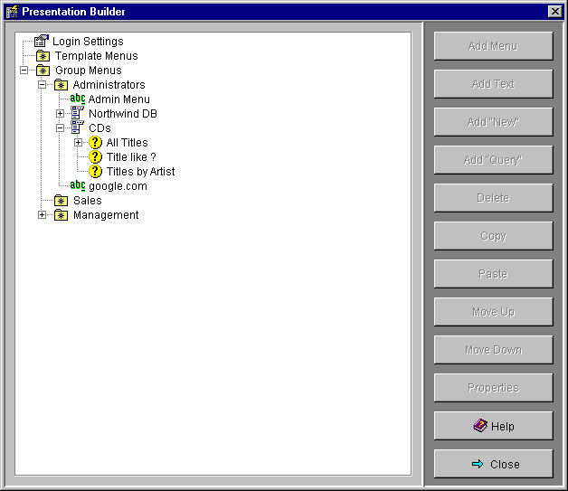
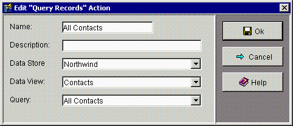

The Presentation Builder allows you to build the menus and information that is presented to the mobile users of Mobile Data Now. Select Presentation Builder from the Maintain menu or click the Presentation Builder button of MDN Administrator. The following screen will be displayed:

The Presentation Builder screen displays the presentation items in a tree. Each type of item in the tree has a different icon. Double click an item in the tree to expand or collapse the item.
There are three top level elements in the tree:
Login Settings controls the initial text displayed
to a WAP user when they log in MDN.
Group Menus contains the menus for each
group.
Template Menus contains menus and submenus that do
not belong to a group but can be used as a template for a group's menu by
copying them into the group's menu and then modifying to suit.
The Presentation builder has the following buttons:
Add Menu
Add Text
Add New
Add Query
Delete
Copy
Paste
Move Up
Move Down
Properties
You use these buttons and the screens they display to build menus for each group of WAP users.
Login Settings specify what MDN does when the a mobile user first logs in. To modify Login Settings select the Login Settings icon in the Presentation Builder and click the Properties button. The following screen will be displayed:
If the Use Splashscreen checkbox is checked then Mobile Data Now will present a Welcome splashscreen to a user logging in. It will have the title specified by Splashscreen Title and a welcome message specified by Splashscreen Text.
Login Screen Title specifies the title of the Login page and
Login Screen Text specifies the text for that screen.
Username Prompt specifies the prompt that will preceded the User Name
field on the login screen.
If the Require Password box is checked then MDN will require a password to be entered by the mobile user. Password Prompt specifies the prompt that will precede the Password field.
Logout Title and Logout Text specify the title and text shown on the Logout screen that is displayed after a user has logged out.
Once a User has logged in to MDN they are presented with the Menus of the
Groups to which they belong.
The Group Menus icon in the Presentation Builder tree contains an icon for each
User Group beneath it. Each of these contains the hierarchical menu structure
that is available to users of that group. If a User belongs to more than
Group then all of these Group menus are displayed on login. See
Building Menus below for instructions on building menus.
Template Menus are menus the do not belong to a group but can be used as a
template for a group's menu by copying them into the
group's menu and then modifying to suit. Template menus are built in the same way
as normal group menus.
See Building Menus below for instructions on building menus.
This section describes how to build Group and
Template menus.
To add an item to a menu, simply select the parent menu
element in the tree and click one of the Add ... buttons.
The Add Text button allows you to add Text, a URL, or a Phone Number to a menu. Clicking this button will display the following screen:

Name specifies the name of the menu item as it is to appear on the menu.
Description is a textual description of the item for your reference.
By selecting the Phone Number radio button you are able to then enter a
Phone Number in the field below.
If the mobile user then selects this item then that Phone Number will be dialled
on the mobile device.
By selecting the URL radio button you are able to then enter a URL in the
field below. If the mobile user then selects this item then the mobile device
will browse to that URL.
The Add Menu button allows you to add a new submenu. Clicking this button will display the following screen:

Name specifies the name of the menu item as it appears on the menu.
Description is a textual description of the item for your reference.
The Add New button allows you to add a new record to a view. Clicking this button will display the following screen:

Name specifies the name of the menu item as it appears on the menu.
Description is a textual description of the item for your reference.
Data Store allows you to select the Data Store to add a record to.
Data View allows you to select the View that the new record will be
inserted into.
The Add Query button allows you to add a new
query to the menu. This action will allow the
mobile user to execute the indicated query and view the results.
Clicking Add Query button will display the following screen:

Name specifies the name of the menu item as it appears on the menu.
Description is a textual description of the item for your reference.
Data Store allows you to select the Data Store that the query belongs to.
Data View allows you to select the View that the query belongs to.
Query allows you to select the query you wish to add to the menu.
Drill-down Queries
You are able to add a Query as a sub-item of another query. This creates a
drill-down query with the following behaviour:
A user creates a drill-down query where the parent query is All Product
Categories and the sub-query is All Products. Note that there must be a
relationships the appropriate tables (i.e. Product and Product Category) in the
Data Store Relationships.
1. The user executes the parent query (i.e. Product Categories).
2. The results of that query are displayed (i.e. All Product Categories).
3. The user selects one of the Product Categories.
4. The sub-query (All Products) is executed for that particular Product Category.
5. A list of Products belonging to that Product Category are displayed.
6. The user clicks on a Product.
7. The properties of that record are displayed as usual.
You are able to nest drill-down queries to any level that is desired.
You are able to change the order of child menu items within their parent menu item. Simply select the item and click either the Move Up or Move Down button.
You are able to copy menu items or entire sub-menus and paste them onto another
menu item anywhere in the Presentation Builder tree. Simply select the menu item
or sub-menu you wish to copy and press the Copy button.
Then select the target parent menu item that you wish to paste the sub-menu to
and press the Paste button.
The menu that you have selected and all of its child elements will be copied and
pasted to the selected location. This creates a separate copy of the menu
items. Any changes in the source menu item will not affect the copy and
vice-versa.
If a menu item or Login Settings is selected pressing the Properties button will display the appropriate properties screen to edit that item.
If a menu item is selected pressing the Delete button will remove that item and any sub-items.